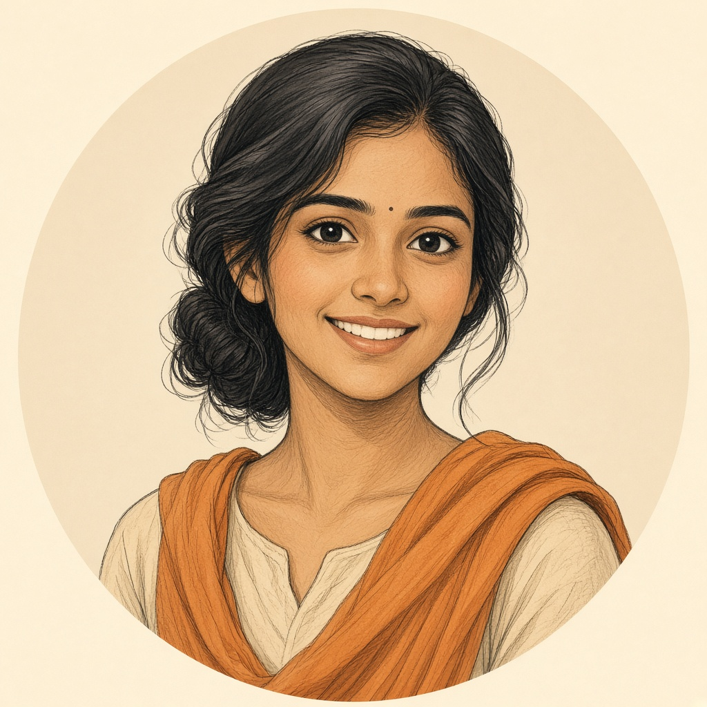
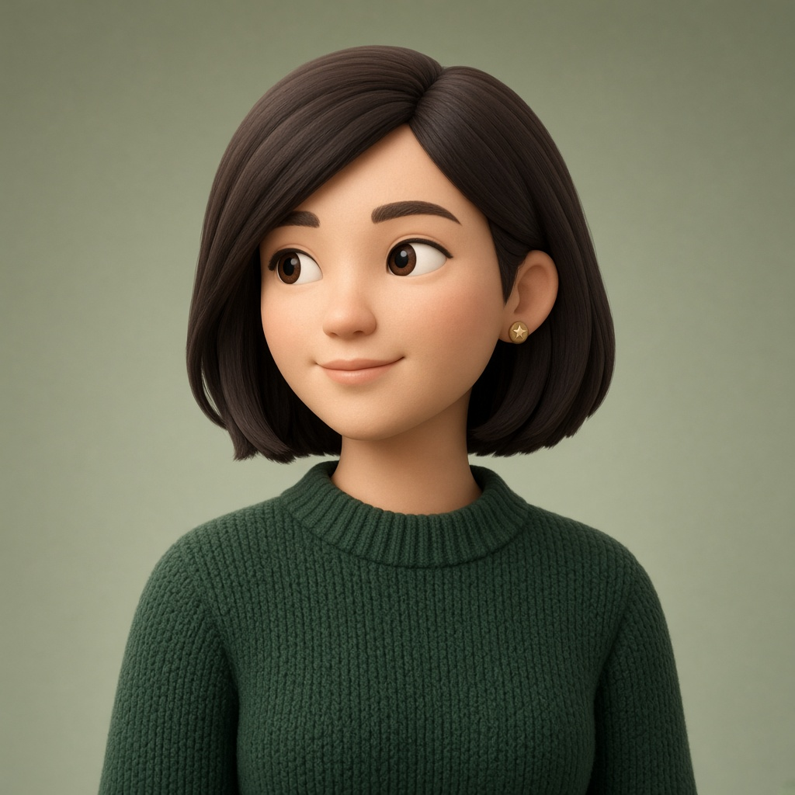
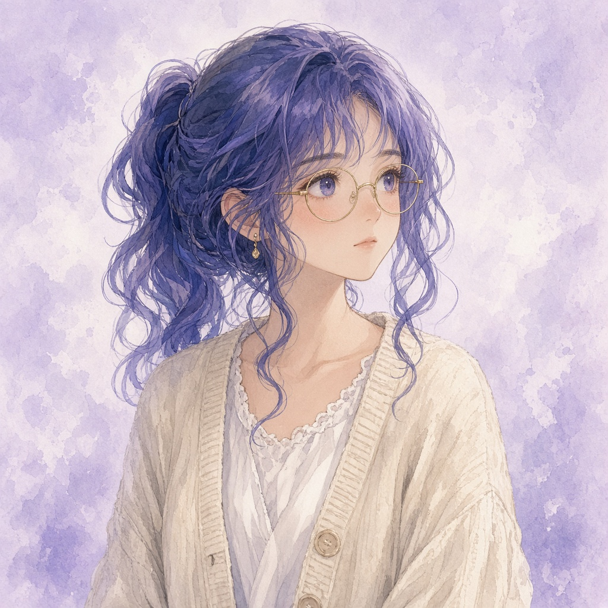
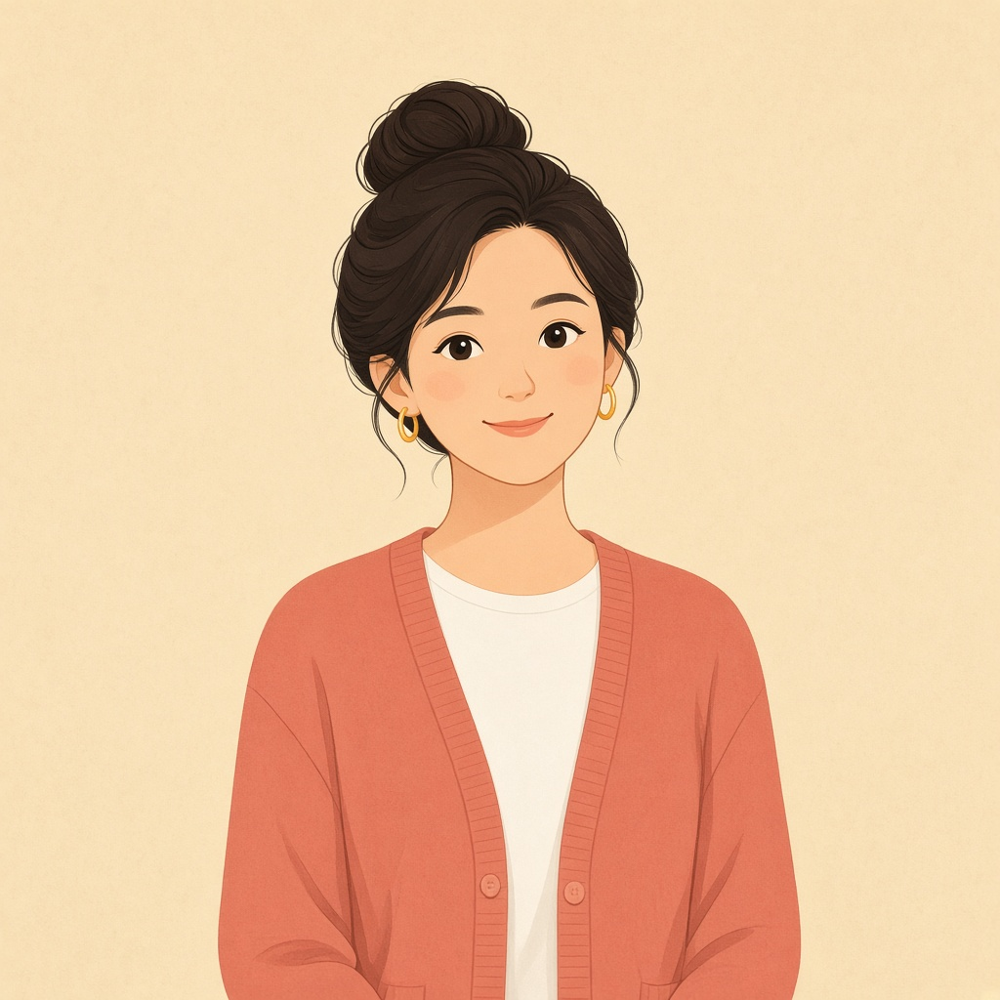
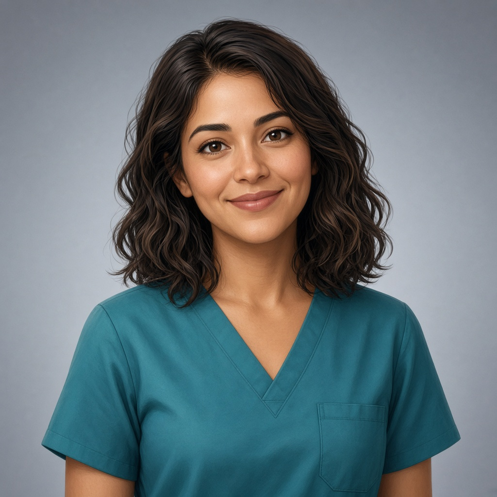
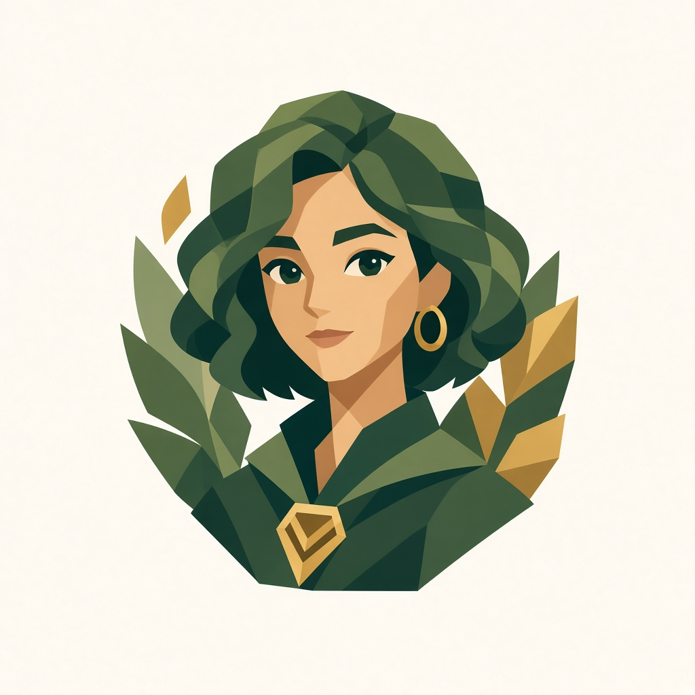
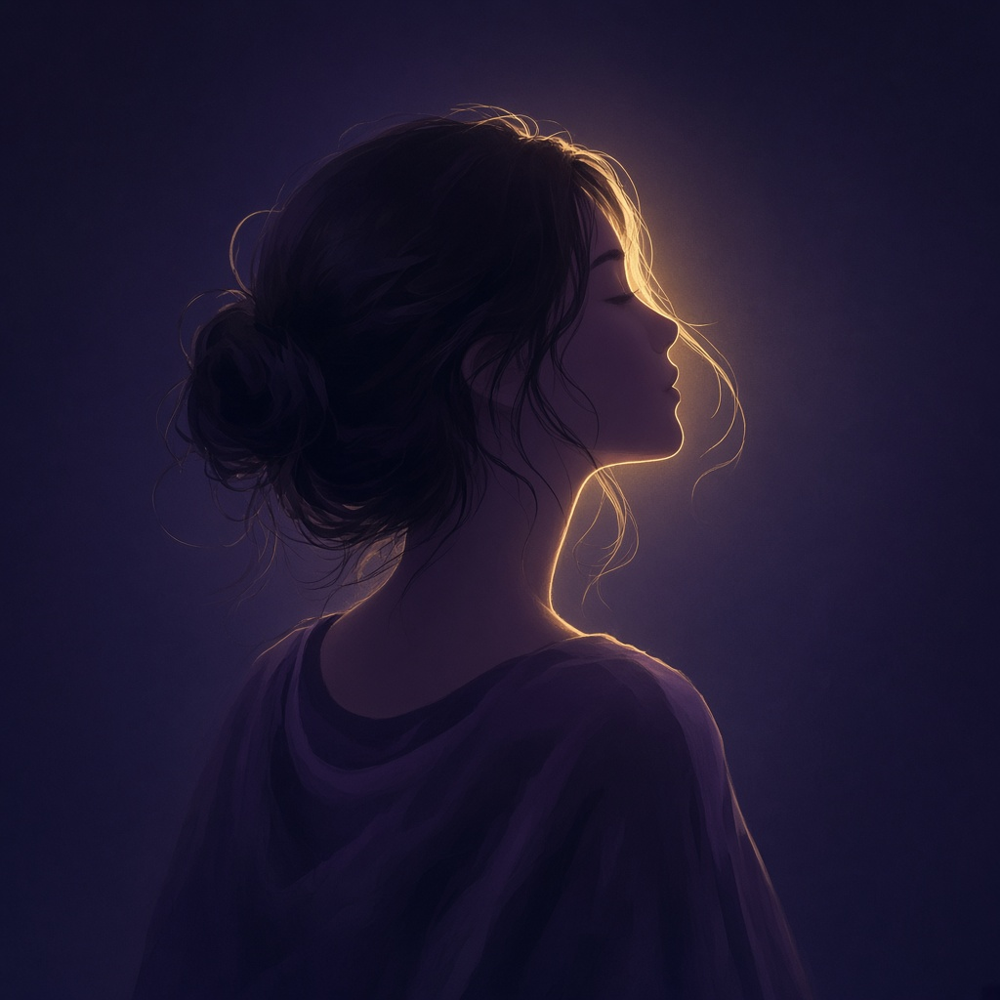

8 girl avatar options
Candidates to replace the Pause pebble. Pick a number (or mix style + character).







Candidates to replace the Pause pebble. Pick a number (or mix style + character).






